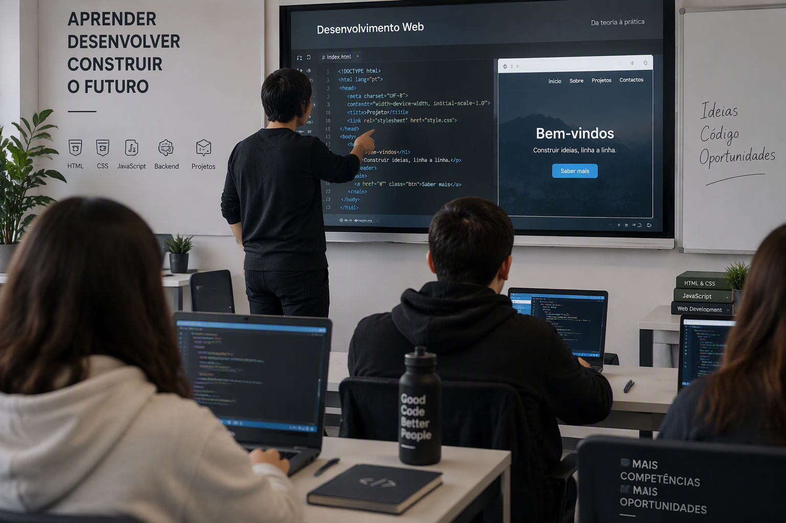

Professor/Formador na área do Desenvolvimento Web, atualmente a exercer funções numa escola profissional, com experiência na lecionação de tecnologias e ferramentas de programação web. Dedicado à formação de alunos em áreas como HTML, CSS, JavaScript, bases de dados e desenvolvimento de aplicações web, promovendo uma aprendizagem prática e orientada para o mercado de trabalho. Comprometido com a inovação pedagógica, o desenvolvimento de competências técnicas e a preparação dos alunos para os desafios do setor tecnológico.